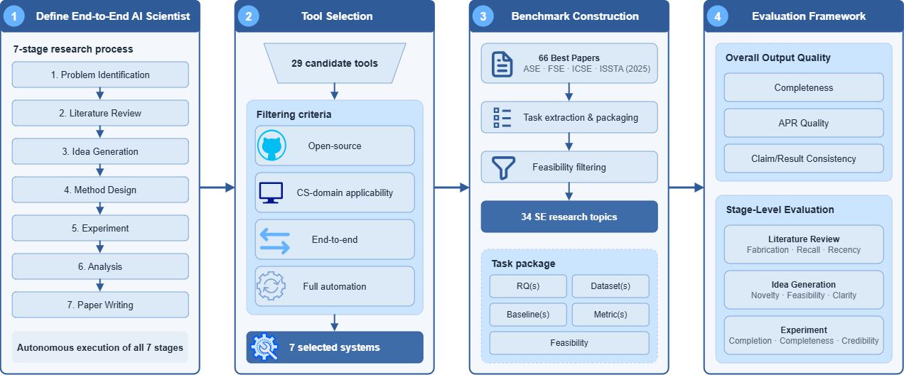

Companion website of a paper under double-anonymous review. It holds the full study data and the details that did not fit in the paper.
Abstract
End-to-end AI Scientist tools that autonomously carry out the entire research lifecycle, from literature review to paper writing, are proliferating rapidly and hold the promise of greatly accelerating scientific discovery. Yet their practical value remains hard to judge: existing evaluations are largely self-reported, each tool is tested on its own benchmark with its own metrics, and no study has systematically compared several such systems on a shared framework. To close this gap, we present the first large-scale empirical study that directly compares seven end-to-end AI Scientist tools in the software engineering (SE) domain.
We build a benchmark of 34 research tasks distilled from the best papers at four top-tier SE conferences in 2025 and design a two-level evaluation framework that grades both overall paper quality and the intermediate artifacts produced at key pipeline stages, yielding 238 tool-task records. Only three of the seven tools complete more than 60% of the tasks, and the best composite score is just 0.54. All tools produce papers with high question importance (0.69 to 0.88) but weak support and negative experimental soundness, with experiment execution as the main bottleneck. Integrity failures are dominated by selective reporting rather than fabrication: of 22 concealment cases, only 2 involve fabricated numbers. Current tools are best understood as cost-effective drafting assistants rather than autonomous researchers.

Eight findings
- Completion follows execution architecture. Fixed pipelines fail fatally on interface defects; tool-calling agents repair errors in place and complete 82% to 85% of tasks.
- The shortfall is in evidence, not topic or writing. Experimental Soundness is negative for every tool, and none of 104 reviewed papers is rated positive on it.
- Tools answer a different question than the original paper. Mean conclusion coverage is 0.58 and mean alignment 0.39.
- Literature reviews are small and narrow, not fabricated. Leading tools cite about 7 papers against 50 to 58 in the originals.
- Ideas are mostly incremental. 73% of 103 self-generated ideas are incremental improvements; none is a paradigm shift.
- Hard-coded domain priors cause task drift. Executors that assume a machine-learning workflow turn SE tasks into toy ML experiments.
- Integrity failures are selection, not fabrication. Of 22 confirmed concealment cases, 2 are fabricated numbers.
- Low cost does not buy quality. A run costs $1.42 on average, yet tools that complete almost nothing consume about half of all spending.
What each page adds to the paper
| Page | Beyond the paper |
|---|---|
| Definition | The seven-stage reference process and how stage coverage was judged |
| Tool selection | All 29 candidates, the stage-coverage matrix, and why each excluded tool was excluded |
| Benchmark | All 66 source papers, per-paper filtering decisions, the 34 tasks, a full task package |
| Evaluation | Full rubrics, judge prompts, aggregation formulas, run configuration |
| RQ1, RQ2, RQ3 | Per-task results, failure analyses, case studies |
| Data and code | Repository, raw run records, reproduction steps |